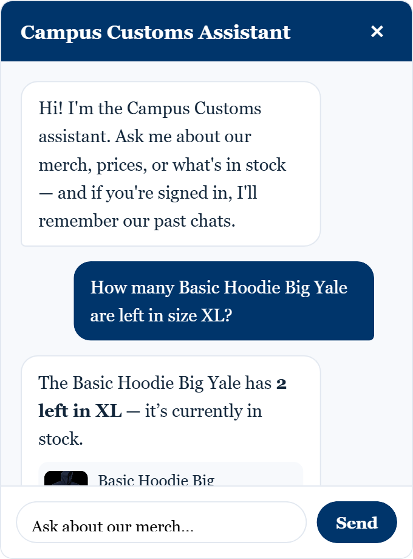
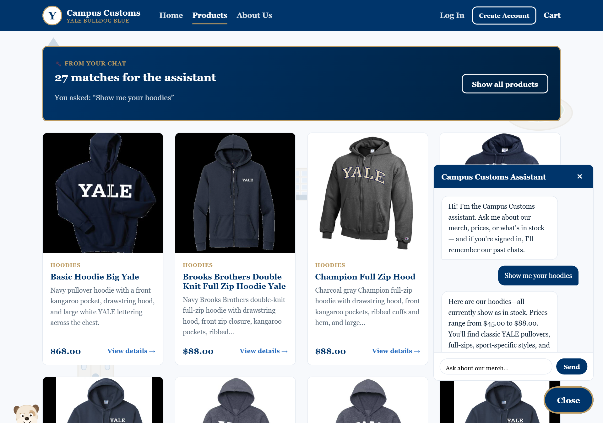
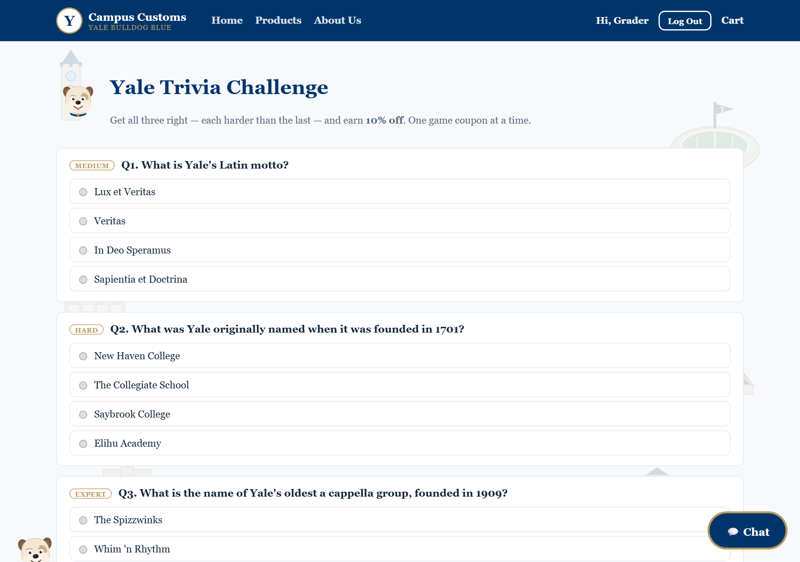
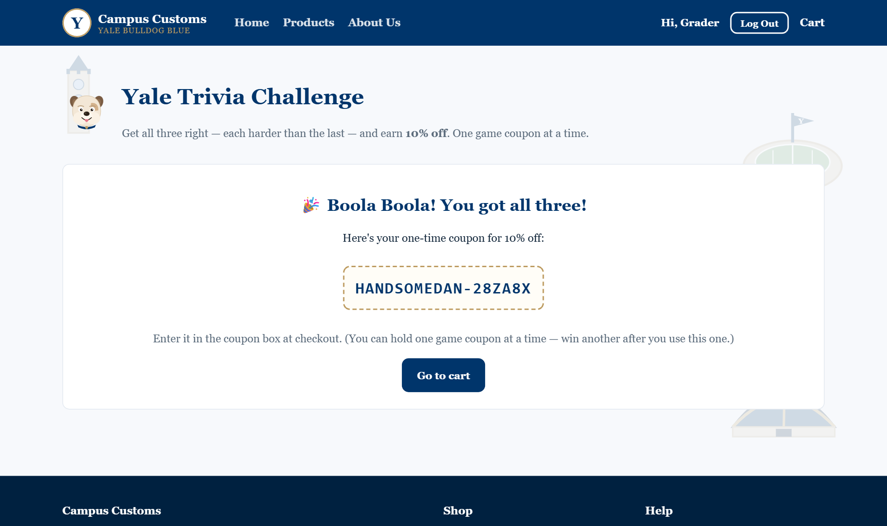
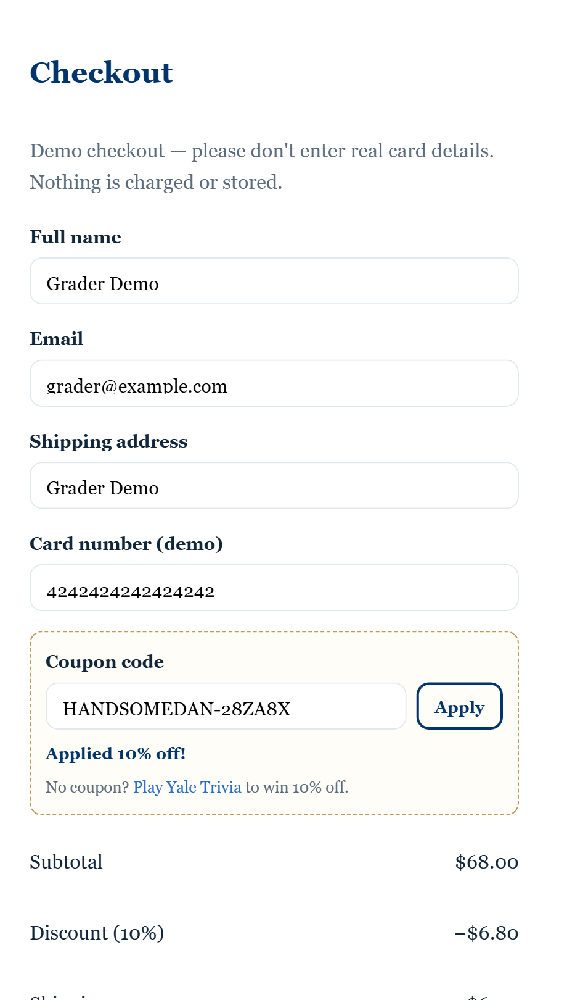

1. Chat checks live inventory AI + database
We asked the assistant, "How many Basic Hoodie Big Yale are left in size XL?" It looked the answer up in the database in real time and replied "2 left in size XL" — and surfaced the product card with its price. This proves the chatbot gives honest, up-to-the-minute stock and price answers drawn from the actual catalogue, not guesses.

The assistant reads stock live, so as items sell the numbers it reports go down automatically.
2. Chat search updates the page dynamic UI
Saying "Show me your hoodies" in the chat instantly updates the website: the Products page switches to a "From your chat" view showing exactly the 27 matching hoodies the assistant found. Every match is a normal product card, so clicking one still opens its full detail page. This proves the conversation drives what the shopper sees.

The navy banner confirms the page is showing the assistant's matches for the exact question that was asked.
3. Usability: Yale Trivia earns a discount engagement
A signed-in shopper can play a three-question Yale trivia game (each harder than the last). Answering all three correctly awards a one-time 10% coupon with a unique, Yale-themed code, which applies at checkout. This feature builds brand affinity and gives shoppers a fun reason to come back and buy.

Three questions, labeled Medium → Hard → Expert.

All correct → a unique code (e.g. HANDSOMEDAN-28ZA8X).

The won coupon applied at checkout — 10% off ($68.00 → −$6.80). Coupons are single-use and tied to the shopper's account.